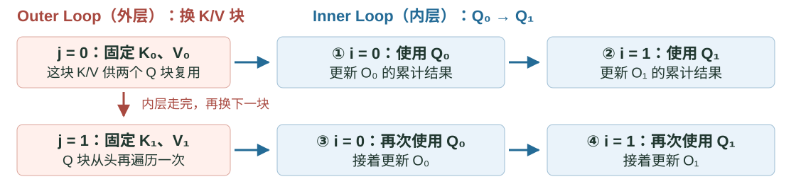

FlashAttention：从在线 Softmax 到现代 GPU 流水线
从 Attention 的数学目标出发，依次拆解 FA1、FA2、FA3、FA4 的瓶颈、工作分配与流水设计。
学完这一讲，你能
- 用在线状态解释分块 Attention 为什么不必保存完整概率矩阵
- 比较 FA1–4 各自的瓶颈与设计变化
- 区分数学目标、浮点误差与性能测量条件
Attention 的任务与优化路线
FlashAttention：从计算目标到执行效率
Attention 的任务是：根据相关程度，对信息做一次加权汇总。
Query 提出查询，Key 用来匹配，Value 提供要汇总的内容。它把前面学过的矩阵乘、Softmax、归约与片上复用接在一起。
本讲先用四个 Key 算出一个确定的答案，再沿四代实现追踪同一个问题：得到这个答案，数据怎样存放，工作怎样分配，执行怎样安排？
从显存搬运出发，逐步走到线程分工、异步重叠与不同硬件资源的配合。
Q、K、V：匹配信息，再汇总内容
把一行 Query 看作一次查询：它逐一比较各行 Key，再决定各行 Value 应占多大权重。
| 数据 | 直观作用 | 一个 Query 的处理过程 |
|---|---|---|
| Q：Query | 我要找什么 | 提供查询特征 |
| K：Key | 每个候选怎样与查询匹配 | 比较后得到相关性分数 |
| V：Value | 候选能提供什么内容 | 按权重汇总，形成输出 O |
Softmax 把分数变成总和为 1 的权重。分数越大，通常获得越大的权重。
每个 Query 都有自己的权重和输出。 先只看一个 Query、四个候选，Value 暂时用一个数表示。
四个 Key：先算一次加权汇总
假设一个 Query 对四个 Key 的未归一化权重为 [1,2,4,8]，对应 Value 为 [2,4,6,8]：
| Key | 0 | 1 | 2 | 3 |
|---|---|---|---|---|
| 未归一化权重 | 1 | 2 | 4 | 8 |
| Value | 2 | 4 | 6 | 8 |
| 权重 × Value | 2 | 8 | 24 | 64 |
这些权重可以来自分数 的指数。先记住答案 98/15；后面改变分块与处理顺序，都要回到同一个加权汇总。
把加权汇总写成 Attention 的矩阵形式
现在把许多 Query 一起计算，并把标量 Value 扩展为向量。固定一个 head：
| 张量 | 形状 | 每一行的含义 |
|---|---|---|
| Q | 一个查询的特征 | |
| K | 一个候选的匹配特征 | |
| V | 一个候选提供的内容 | |
| O | 一个查询汇总出的内容 |
两次矩阵乘之间夹着逐行 Softmax。后面主线取 、，无 dropout；N 是序列长度，d 是每个 head 的特征维度。
FA1：减少中间矩阵的显存读写
FA1 的动机：中间矩阵的显存往返
按三个独立步骤执行 Attention 时，中间结果会这样传递：
QKᵀ → 完整 S 写入显存
Softmax → 读取 S，完整 P 写入显存
PV → 读取 P，得到输出 O
S 和 P 都有 个元素，N 翻倍，元素数变为四倍。它们最终只用于生成输出，却可能付出大量存储与读写成本。
FA1 的出发点：只算当前需要的一小块，立即更新输出，随后释放这块中间数据。 难点是 Softmax 需要整行的分母，必须找到能分批更新的办法。FA1 论文
上下文翻倍，显存为什么先告急？
S+P 是朴素实现的容量算例，并非所有框架的实际峰值。FlashAttention 不生成全尺寸 S/P，但仍需要输入、输出、片上工作区及实现相关临时空间；这个数字不代表完整模型显存或实测 HBM 流量。
这里单独计算 Attention 张量的有效载荷。训练模型还要加参数、梯度、优化器状态与其他激活。
FA1 的思路：分数块算完，立即服务于输出
第六讲的 GEMM 分块让输入在片上复用。Attention 再向前走一步：把 QK、Softmax 与 PV 的局部工作接起来，缩短中间结果的存活时间。

每次只保留当前分数块与必要的累计状态。接下来先看熟悉的 PyTorch 表达，再用四 Key 算例解决“分母尚未读完，怎样累计输出”。
PyTorch 中的完整 Attention 核心
q、k、v 的形状为 [batch, heads, N, d]。下面展示相同输入上的两条前向路径：
import torch
import torch.nn.functional as F
# 显式路径：形成完整的分数与概率矩阵
scores = (q @ k.transpose(-2, -1)) / (q.shape[-1] ** 0.5)
probabilities = torch.softmax(scores, dim=-1)
o_explicit = probabilities @ v
# SDPA 接口：由后端实现缩放点积 Attention
o_sdpa = F.scaled_dot_product_attention(q, k, v, dropout_p=0.0)
@ 是矩阵乘；transpose(-2,-1) 交换最后两个维度；dim=-1 表示沿每行 Key 方向归一化。SDPA 是算子接口，不能仅凭函数名判断 FA 版本。PyTorch 文档
课堂源码与运行环境
以下文件用于教师课堂演示，核心代码在后续页面逐步展示；命令在对应演示目录中运行。
| 文件 | 用途 | 环境 |
|---|---|---|
attention_online_demo.py | 四 Key 在线算法，改变分块大小 | Python 标准库 |
attention_benchmark.py | 显式 S/P 与融合 SDPA 对照 | CUDA 版 PyTorch |
attention_reference.py | 掩码、尾部与梯度的扩展校验 | Python 标准库 |
python attention_online_demo.py
课堂 GPU 环境为 RTX 5090 Laptop、PyTorch 2.11.0+cu128。该环境的 Windows 包未编译原生 Flash 后端；实测显式选择 cuDNN SDPA 来观察融合效果。FA1–FA4 的版本差异按照论文逐步拆解。
FA1：分块与在线 Softmax
分批汇总：保留分子与分母，最后再相除
四个 Key 分成前后两批。先不考虑指数溢出，只把加权平均拆开：
| 数据 | 权重和：分母 | 权重乘 Value 的和：分子 |
|---|---|---|
| Key 0、1 | ||
| Key 2、3 | ||
| 合并 | 15 | 98 |
输出仍为 98/15。旧块只留下这两个累计量，就能继续读新块。
如果只保存局部平均 与 ，再直接平均，会得到错误的 5.333333。两批的权重不同，必须保留各自的权重总量。
Softmax：把一组分数变成总和为 1 的权重
输入是同一个 Query 对所有 Key 的分数 ；输出是同样长度的权重向量 。对第 j 个 Key：
| 步骤 | 四个 Key 的例子 |
|---|---|
| 输入分数 x | |
| 每个分数取指数，得到正数 | |
| 所有指数相加，得到共同分母 | |
| 每项除以 15，得到 Softmax 输出 p | ，总和为 1 |
Softmax 到 p 就结束了。 Attention 再用这些权重汇总 Value：。Value 不参与 Softmax 的定义。
分母中的 i 遍历整行所有 Key，j 标出当前计算哪一项。接下来解决分数很大时，指数如何避免溢出。
稳定 Softmax：先统一尺度，再合并累计量
指数会把大分数变成很大的数。为避免溢出，可以把所有权重一起缩小，同时保持它们的比例。
四个未归一化权重 同时除以 8，变成 。归一化时分子、分母都缩小 8 倍，每个 保持不变：
取 ，每个指数不大于 1；本例 。减去 r 等于把所有指数都除以 ，权重 p 不变，所以后续 Attention 输出仍为 98/15。
分批读取时，如果参考值变了，旧累计量也要换到新的尺度。
后面用 将指数写成 ，分数恰为 [0,1,2,3]，便于手算。
在线 Softmax：把已经读过的数据记在三个状态里
把处理过程想成一份累计账本：每读一批，就更新总量，随后继续读下一批。
| 状态 | 在累计账本中的作用 | 四 Key 例子 |
|---|---|---|
| 记录当前使用的参考尺度 | 标准更新选择已读分数的最大值 | |
| 累计相对权重 | 加权平均的分母 | |
| 累计相对权重 × Value | 加权平均的分子 |
读完全部 Key 后，输出 。 Value 是向量时，u 也变成向量，仍逐分量累计。
“在线”表示数据分批到达时持续更新结果。新旧两批如果使用不同参考值，合并前先统一尺度。
第一块与第二块，必须使用同一数值尺度
先读 base-2 分数 [0,1]、Value [2,4]：以 1 为参考，相对权重为 [0.5,1]，得到 、。
再读 [2,3]、Value [6,8]，新参考变为 3。旧贡献须乘 ：
| 步骤 | 分母 | 分子 |
|---|---|---|
| 旧状态换尺度 | ||
| 新块的贡献 | ||
| 合并 | 1.875 | 12.25 |
这相当于把旧账本与新账本换成同一单位，再合账。分子、分母一起缩放，旧块内部的加权平均不变；最终 。
参考变了，旧状态要一起换单位
新块 到达后，标准更新选择 ，令 。
旧分子与旧分母同时乘 ，表示它们已经换到新参考 下。输出只在读完后除一次。
在线更新：读取、缩放、累加与输出
输入 / 当前数据
Key 0、1：base-2 分数 [0, 1]
Value：[2, 4]
当前处理
参考 r = 1
相对权重 [1/2, 1]
保存 / 输出结果
分母 ℓ = 1.5
分子 u = 5
保留 r、ℓ、u
代码中的变量与输入约定
下面是 单行、标量 Value、base-2 分数 的完整计算函数；它在 CPU 上解释算法，不是某一代 CUDA 内核。
| 变量 | 含义 |
|---|---|
scores、values | [0,1,2,3] 与 [2,4,6,8] |
block_size、start | 每块项数、当前块起点；不是 CUDA block 线程数 |
r、new_r、scale | 旧参考、新参考、旧状态缩放倍数 |
denominator、numerator | 与 |
j、values[start+j] | 块内位置、该 Key 对应的 Value |
enumerate(block) 逐项给出块内位置与分数，** 表示乘方。初始化分母、分子为 0；-inf 表示屏蔽分数。整块屏蔽时跳过，整行无有效项时本例返回 0。
在线 Attention 的完整计算过程
import math
def online_row(scores, values, block_size=2):
r = -math.inf
denominator = numerator = 0.0
for start in range(0, len(scores), block_size):
block = scores[start:start + block_size]
block_max = max(block)
if block_max == -math.inf:
continue
new_r = max(r, block_max)
scale = 0.0 if r == -math.inf else 2.0 ** (r - new_r)
denominator *= scale
numerator *= scale
for j, score in enumerate(block):
weight = 2.0 ** (score - new_r)
denominator += weight
numerator += weight * values[start + j]
r = new_r
return numerator / denominator if denominator else 0.0
完整课堂程序另含输入检查和独立稠密参考。这里每轮只生成当前块的相对权重，最终仅除一次。
Value 是向量时，哪些状态会变大
若每个 Value 有 64 个分量，每个 Query 的 也有 64 个分量； 和 仍各只有一个数。
u[0] = scale*u[0] + Σ weight[j]*V[j,0]
u[1] = scale*u[1] + Σ weight[j]*V[j,1]
...
u[63] = scale*u[63] + Σ weight[j]*V[j,63]
一次处理多行 Query 时，当前分数块来自 ，上述 64 个分量的加权累加来自 ，因此又回到两次矩阵乘。
分块状态是逐 Query 行维护的，不是整个 block 共用一个 Softmax 分母。
运行验证：换分块大小，答案不变
python attention_online_demo.py
Dense reference = 6.533333
Block size 1 = 6.533333
Block size 2 = 6.533333
Block size 4 = 6.533333
Checks: 45 PASS (tails, masks, large scores)
先观察“每次只看一个、两个或四个 Key”得到同一答案，再看 GPU 如何组织这些数据。这个实验验证算法与边界处理，不测 GPU 性能。
FA1 的双层循环：固定 K/V，依次处理 Q
把 Q 分成 Q₀、Q₁ 两块；K/V 按相同的行分成 K₀/V₀、K₁/V₁ 两对块。下标是块号；O₀、O₁ 分别对应两组 Query 的输出。

外层每前进一步，内层都从头走完一遍。 ①②使用同一块 K₀/V₀；③④使用同一块 K₁/V₁，每个 Q 块最终都看过全部 Key。
O₀ 在①③更新，O₁ 在②④更新，需保留各自的旧结果与统计量。块内计算仍由许多 GPU 线程并行完成。
原论文读图：FA1 把中间矩阵留在哪里？
论文出处与图片说明
FlashAttention: Fast and Memory-Efficient Exact Attention with IO-Awareness
Tri Dao, Daniel Y. Fu, Stefano Ermon, Atri Rudra, Christopher Ré
arXiv:2205.14135v2 · PDF 第 2 页
从原 PDF 裁切图区并转为 PNG；保留图内标注、坐标轴和数据，未重绘。
arXiv 非独占分发声明；原作者保留版权
- 左：放在哪里。 SRAM 是片上存储，HBM 是显存，CPU DRAM 是主机内存；20 MB 是片上总量，不是单个 block 的容量。
- 中：两层循环。 Outer Loop（外层）搬入并固定 K/V；Inner Loop（内层）逐块搬入 Q 及旧输出/统计量，更新后写回 HBM。Copy 是搬入，Output to HBM 是写回；
sm是 Softmax。 - 右：融合步骤。 Matmul / Mask / Dropout 是矩阵乘、掩码、随机丢弃；Fused Kernel 是融合内核，Time 单位为毫秒。N 是序列长度，d 是 head 维度， 表示转置。
避免的是完整 分数与概率矩阵的显存往返。 图中带宽、容量和时间均来自原论文环境。
Attention 的计算量：两个矩阵乘分别数
先看 一个样本、一个 head：N 个 Query 和 N 个 Key，Q/K/V 每行均为 d 维；所有 Query 都看全部 Key。长度 k 的点积按约 2k FLOPs 计（乘、加各一次）。
| 步骤 | 要算多少个输出数？ | 每个数怎样算？ | 运算量 |
|---|---|---|---|
| ：算分数 | 个分数 | 两个 d 维向量点积，约 2d 次 | |
| ：汇总 Value | 个输出分量 | 沿 N 个 Key 加权求和，约 2N 次 |
例：N=4、d=2。 算分数：16 个数 × 4 次 = 64；汇总：8 个数 × 8 次 = 64。两次矩阵乘共计 128 FLOPs。
若有 B 个样本、每个样本 H 个 head，上述工作重复 BH 份：
Softmax 等操作另计。分块省掉中间矩阵的存储与搬运，配对仍全部计算；N 翻倍，主要算量约变成 4 倍。
FA2：重新划分工作与状态
从 FA1 到 FA2：减少搬运之后，改善工作分配
FA1 避开了完整 S/P 的显存往返，但 GPU 还可能有空闲资源或额外协作成本。
| 剩下的问题 | 直观表现 | FA2 的改进方向 |
|---|---|---|
| 独立任务太少 | 有些 SM 没分到足够工作 | 沿 Query 行展开更多任务 |
| 一个输出分给多个 warp | 算完还要交接、合并 | 让各组负责完整输出行 |
| 反复归一化输出 | 同一向量重复做除法等操作 | 累计分子，最后统一归一化 |
FA2 先重新安排“谁负责哪些结果”，再减少完成这些结果所需的协作。FA2 论文
FA2：把独立的 Query 输出分给更多 block
不同 Query 行有自己的权重和输出，因此可以分别交给不同 block（CTA，即线程块）。
设 batch=1、head 数=8，每个 head 有 8192 行 Query：
| 分工方式 | 独立输出任务 |
|---|---|
| 只按 batch 和 head 粗分 | 8 个 |
| 每个 head 按 128 行 Query 切块 | 个 |
面对很多 SM，更多独立任务能让调度器更充分地分配工作。每个 block 负责自己的 Query 块，并遍历所需 K/V。
512 是总任务数，不是同时驻留的 block 数；还要检查资源占用与 K/V 复用。
原论文读图：一个 block 负责哪些 Query？
上一页把一个 head 拆成许多 Query 块；这张图标出每个 block 具体负责哪里。
论文出处与图片说明
FlashAttention-2: Faster Attention with Better Parallelism and Work Partitioning
Tri Dao
作者公开 PDF，获取于 2026-09-14 · PDF 第 8 页
从原 PDF 裁切图区并转为 PNG；保留图内标注、坐标轴和数据，未重绘。
作者公开论文；版权与使用条件参见原文
- 左图 Forward（前向）： 行是 Query 块，列是 Key 块；每格是一块分数矩阵。每种颜色的 Worker 是一个线程块（CTA），它沿负责的行遍历 K/V，生成这些行的输出。
- 三角形： 图中采用因果 Attention，Query 只能看当前位置及之前的 Key，所以右上方的未来位置被屏蔽。
- 右图 Backward（反向）： 按列块组织工作，便于汇总对应 K/V 的梯度；反向还有其他合并步骤，后面再展开。
先抓住前向的结论：固定 Q 块，遍历 K/V，保留自己的输出状态。 下一页把它写成循环与状态归属。
从 FA1 到 FA2：改变循环与状态的归属
| FA1 原始算法图 | FA2 的 Query 分块组织 |
|---|---|
| 外层遍历 K/V 块，内层遍历 Q 块 | 一个 CTA 负责固定 Q 块，内部遍历 K/V |
| 反复更新各 Q 块的输出与统计量 | 本 CTA 保留自己的行状态直到完成 |
| 优先减少大矩阵的显存往返 | 进一步展开 Query 并行，减少通信和重复操作 |
前面的单行 CPU 函数固定一个 Query，方便看清在线状态；它不是 FA1 原始 GPU 调度顺序的逐行翻译。
两种组织都使用分块与重缩放，优化的层次不同。FA2 论文
两个 warp：分 Key 还是分 Query
教学缩小为 4 行 Query、4 行 Key，只看一个 block 内的两个 warp：
| 划分方式 | Warp 0 | Warp 1 | 还要做什么 |
|---|---|---|---|
| 沿 Key 切 | Q0–Q3 × K0–K1 | Q0–Q3 × K2–K3 | 两边都有同一输出行的部分贡献，须合并 |
| 沿 Query 切 | Q0–Q1 × K0–K3 | Q2–Q3 × K0–K3 | 各自完整负责输出行，减少跨 warp 合并 |
这与第七讲归约相联系：把同一结果拆给多组算，最后就要把它们收回来。
共享的 K/V 仍需要合作加载。两个 warp 和四行只是教学尺寸，不是论文 kernel 的固定配置。
原论文读图：FA2 为什么沿 Q 分工？
把刚才的两个 warp 扩展为图中的四个，仍只看一个 block 内部。
论文出处与图片说明
FlashAttention-2: Faster Attention with Better Parallelism and Work Partitioning
Tri Dao
作者公开 PDF，获取于 2026-09-14 · PDF 第 9 页
从原 PDF 裁切图区并转为 PNG；保留图内标注、坐标轴和数据，未重绘。
作者公开论文；版权与使用条件参见原文
- 读图例： 蓝色 Accessed by all warps 表示各 warp 都会访问；橙色 Split across different warps 表示由不同 warp 分担。
- 左图 FA1： Q 共享，Kᵀ / V 按 Key 切给 Warp 1–4。同一输出行由多组贡献，算完需要合并。Kᵀ 画成横条、V 画成竖条，是转置改变了 Key 维度的方向。
- 右图 FA2： Q 按行切分，Kᵀ / V 共享；每个 warp 扫过所需 Key，负责完整输出行，减少部分结果的交接。
输出行更独立，K/V 仍需合作加载和同步。 下一步再减少每行内部重复的归一化操作。
FA2：累计分子，减少重复归一化
前面的参考代码保留未归一化的 u，最后才除以分母。这样写也能减少 GPU 上的重复操作。
设一个 Query 的输出有 64 个分量，共处理 8 个 K/V 块，只看输出归一化：
| 写法 | 示意中的分量归一化次数 |
|---|---|
| 每读一块就重新归一化输出 | |
| 累计 u，最后统一归一化 | 64 |
矩阵乘由 Tensor Core 高效执行；归约、指数、输出修正使用其他执行资源。操作数量少，不代表耗时占比小。
延后除法能省去重复工作；参考尺度变化时，仍需同步调整分子、分母。FA2 论文
沿 Query 分工后，K/V 仍可能被重复请求
教学模型：一个 CTA 独占 128 行 Query，遍历 个 K/V；、每元素 2 B。
| 项目 | 计算 |
|---|---|
| 一个 head 的 Query tile 数 | |
| 每个 CTA 读取一遍 K 和 V | MiB |
| 64 个 CTA 合计请求 | MiB |
减少 S/P 的写回，不等于 Q/K/V 只读一次。以上是忽略跨 CTA 缓存复用的请求量，L2 可能减少实际 HBM 流量。
回看 FA2：三层判断要同时成立
一个候选方案沿 Q 切得更细：更多 CTA、更少每块状态、但 K/V 请求增加。
不要只看 occupancy，建立三个检查：输出是否独占；设备是否有足够工作；复用损失是否抵消了并行收益。
FA3：安排异步重叠
从 FA2 到 FA3：工作分好了，阶段仍会等待
FA2 改善了任务分工。对同一个 Query 块，计算依赖仍然是 QK → Softmax → PV。
如果把这些阶段依次执行：
| 当前阶段 | 主要在工作的资源 | 可能等待的资源 |
|---|---|---|
| 计算分数 QK | Tensor Core | 普通算术与指数单元 |
| 计算权重 Softmax | 普通算术与指数单元 | Tensor Core |
| 加权汇总 PV | Tensor Core | 普通算术与指数单元 |
FA3 的动机：一份工作在做 Softmax 时，让矩阵单元处理另一份独立工作。 每份工作的先后依赖保持不变。FA3 作者说明
FA3：用另一份工作填补等待时间
A、B 是两个独立的 Query 块。假设每次矩阵乘耗时 2、Softmax 耗时 3：

A 做 Softmax 时，矩阵单元计算 B 的 QK；B 做 Softmax 时，矩阵单元计算 A 的 PV。两块串行需 14 个时间单位，图中的重叠安排需 10 个。
A 的 PV 仍然等 A 的 Softmax 完成。 这是教学时间线，省略搬运与资源竞争；与第六讲的重叠思想相通，这里安排的是 kernel 内部的工作。
Hopper：把重叠安排交给异步硬件
要让上一页的重叠真正发生，需要能独立推进的硬件工作。先补一个组织单位：warpgroup = 4 个连续 warp，共 128 个线程；这里让两组分别计算独立的 Query 输出块。
| 硬件能力 | 在流水线中的作用 |
|---|---|
| TMA：Tensor Memory Accelerator，数据搬运单元 | 异步搬运后续输入，减轻线程的地址计算负担 |
| WGMMA：Warpgroup Matrix Multiply-Accumulate，矩阵乘累加 | 一组线程协作提交异步矩阵工作 |
| 普通算术与指数单元 | 处理 Softmax、归约和累计状态修正 |
异步表示提交后可继续安排其他工作，读取结果前仍要等待完成。接下来先看两组之间交错，再看同一组的相邻 K/V 迭代如何交错。
FA3 还研究 FP8 与误差控制，需另行评估精度。FA3 作者说明
原论文读图：FA3 的重叠发生在两组工作之间
论文出处与图片说明
FlashAttention-3: Fast and Accurate Attention with Asynchrony and Low-precision
Jay Shah, Ganesh Bikshandi, Ying Zhang, Vijay Thakkar, Pradeep Ramani, Tri Dao
arXiv:2407.08608v2 · PDF 第 6 页
从原 PDF 裁切图区并转为 PNG；保留图内标注、坐标轴和数据，未重绘。
CC BY 4.0
先认轴与符号： time 向右推进；两行是 Warpgroup 1 / 2，各自负责不同 Query 块。GEMM0 计算 ，GEMM1 计算 ；0、1 是两种矩阵乘的编号。同一行的同色块属于同一次 K/V 迭代。
先横读，再竖读： 沿第一行粉色块走“分数 → Softmax → 加权求和”；再看同一时刻的第二行，第一组做 Softmax 时，第二组可以做 GEMM0。空白表示该组暂时等待，虚线帮助对齐时刻。
这张调度示意解释了两组之间的重叠。下一页固定其中一组，进一步交错它的相邻迭代。
原论文读图：同一组工作也能跨迭代重叠
论文出处与图片说明
FlashAttention-3: Fast and Accurate Attention with Asynchrony and Low-precision
Jay Shah, Ganesh Bikshandi, Ying Zhang, Vijay Thakkar, Pradeep Ramani, Tri Dao
arXiv:2407.08608v2 · PDF 第 6 页
从原 PDF 裁切图区并转为 PNG；保留图内标注、坐标轴和数据，未重绘。
CC BY 4.0
同一个 warpgroup，三行操作： WGMMA0 = QK，Softmax = 计算相对权重与在线状态，WGMMA1 = PV。横向是时间；块内 0、1、2 是 K/V 块的迭代号。图里的 N−1 表示最后一块，此处 N 是块数，与前文序列长度 N 的用法不同。
沿同色 0 追踪：QK(0) → Softmax(0) → PV(0)。图中先在 PV(0) 之前发起 QK(1)，随后让 PV(0) 与 Softmax(1) 重叠；单块内部的先后依赖仍然成立。
上一页借用另一组工作，这一页借用下一次迭代。需要保留两代中间数据，并在消费结果和复用缓冲前正确等待。
FA4：适应硬件性能比例
从 FA3 到 FA4：矩阵乘提速，其他环节跟不上
FA3 已经安排了重叠，但换到新硬件时，各种资源的速度不会按同一比例提升。
先看一个不含重叠的简化预算：
| 情况 | 矩阵乘 | 其他工作 | 总时间 |
|---|---|---|---|
| 原来 | 10 | 10 | 20 |
| 只有矩阵乘提速一倍 | 5 | 10 | 15 |
一个环节快一倍，整个流程只从 20 降到 15。 实际流水线还要看阶段重叠与依赖。
FA4 面向 Blackwell：矩阵吞吐提升后，指数计算、shared 读取和输出修正更容易成为限制，因此要重新平衡各资源。FA4 论文
原论文读图：矩阵乘更快，指数却可能跟不上
先统一本图符号：M 是一个 Query 块的行数，N 是一个 K/V 块的行数，d 是 head 维度。这里 N 是局部块长，不是前文完整序列长度。
论文出处与图片说明
FlashAttention-4: Algorithm and Kernel Pipelining Co-Design for Asymmetric Hardware Scaling
Ted Zadouri, Markus Hoehnerbach, Jay Shah, Timmy Liu, Vijay Thakkar, Tri Dao
arXiv:2603.05451v1 · PDF 第 6 页
从原 PDF 裁切图区并转为 PNG；保留图内标注、坐标轴和数据，未重绘。
CC BY-NC-SA 4.0
- 列与单位： 表示 ； 只把 M 翻倍。所有数字都是理想服务周期（cycles）。
- 三行资源： MMA compute 为两次矩阵乘，Shared memory 为共享内存读取，Exponential unit 为指数计算；第一列分别需 1024、768、1024 周期，Shared 一行并非容量。
- 为何指数会卡住？ 矩阵乘有 FLOPs，指数只有 次，但对应吞吐分别为每周期 8192 FLOPs、16 次指数，两者都需 1024 周期。
这是论文 B200 的预算，各阶段可以重叠，不能把三行直接相加。接下来分别看数据路径和流水线怎样调整。
TMEM 让 P 和输出状态走上不同路径
先认三处存储：SMEM 是 shared memory，寄存器供线程计算，TMEM 是 Blackwell 为 Tensor Core 中间结果提供的专用片上存储。 MMA 指矩阵乘累加。

沿箭头走一轮：SMEM 中 Q/K → MMA 产生分数 S，存入 TMEM → 线程读到寄存器做 Softmax → 权重 P 写回 TMEM → 与 SMEM 中 V 做 PV，更新 TMEM 中的输出状态。
这里 P 是当前块的未归一化相对权重，输出状态对应前面的分子 u；还要维护分母 ℓ，最后得到 O=u/ℓ。本讲开头的完整概率矩阵 P 已归一化，两者须区分。
课程原创绘图；下一页沿同一路径看两块 Query 如何交错。
原论文读图：FA4 为什么交错两块 Query？
论文出处与图片说明
FlashAttention-4: Algorithm and Kernel Pipelining Co-Design for Asymmetric Hardware Scaling
Ted Zadouri, Markus Hoehnerbach, Jay Shah, Timmy Liu, Vijay Thakkar, Tri Dao
arXiv:2603.05451v1 · PDF 第 6 页
从原 PDF 裁切图区并转为 PNG；保留图内标注、坐标轴和数据，未重绘。
CC BY-NC-SA 4.0
- 左侧分工： i 标 Q 块，j 标 K/V 块；CTA 是线程块，SM 是执行资源。每个 CTA 负责相邻两块、每块 128 行 Query；H / L 是这两块的标记（high / low），不表示高低精度。
- 追一条数据流： ，依次是分数、权重、累计输出。图中省略在线重缩放和最终归一化；P / O 的含义沿用上一页，L 块独立走同一流程。
- 右侧时间线： BF16 UMMA 是 Blackwell 的 BF16 矩阵乘累加，MUFU.EX2 是算 的指数指令；分数已换成 base-2 单位。Clock cycle 向右推进，H/L 交错利用矩阵与指数资源。
一次 GEMM 预算 512 周期，指数阶段 1024 周期，说明只增加矩阵吞吐仍会等待指数。下一页进一步减少指数与输出修正的成本。
FA4：为较慢的环节分担工作
矩阵引擎继续提速以后，要减少指数和累计状态修正的等待，并降低片上搬运成本。
| 成本 | 具体做法 | 为什么可能有效 |
|---|---|---|
| 指数吞吐有限 | 部分指数用多项式近似交给 FMA 单元 | 与专用指数单元分担工作 |
| 重缩放需要修改整个 u 向量 | 数值安全时暂时沿用旧参考值 | 减少重复的状态修正 |
| shared 流量与阶段等待 | 使用 TMEM、重排异步 MMA 流水线 | 调整中间状态的路径与使用时机 |
指数近似要核对误差；沿用参考值要检查数值范围。具体收益还取决于 tile、寄存器和输入形状。FA4 论文
条件重缩放：参考值可以暂缓更新
仍用 base-2 分数 [0,1,2,3]、Value [2,4,6,8]。读完第一块后，参考 r=1，分母为 1.5，分子为 5。
第二块到达时，有两种保持比例一致的处理方式：
| 方案 | 第二块相对权重 | 分母 ℓ | 分子 u | 输出 u/ℓ |
|---|---|---|---|---|
| 参考更新为 3，旧状态乘 1/4 | [0.5,1] | 1.875 | 12.25 | 6.533333 |
| 暂时沿用参考 1 | [2,4] | 7.5 | 49 | 6.533333 |
第二种写法在本例中数值安全，省去旧状态的缩放。r 此时是计算参考值，不一定等于已经见过的最大分数。
两种方式都保持分子、分母使用同一尺度。实际算法须检查数值范围，不能一直忽略参考值更新。
反向重算与课堂评测
“Exact Attention”不表示逐位相同
先区分三个层次：
| 层次 | 本讲关注的变化 |
|---|---|
| 数学问题 | 保留完整的稠密 Attention 配对 |
| 数值算法 | 分块顺序、参考更新、重计算 |
| 数值实现 | FP16/BF16/FP8、指数近似、归约顺序 |
正确性评估同时报告绝对误差、相对误差和任务需要的梯度误差；参考接近零时，单看相对误差会误导。
反向重算：用计算换取更少的中间存储
前向没有保存完整 P，反向仍需要它来计算梯度。可以重读 Q/K，只重新计算当前需要的一小块概率。
动机是：保存少量行统计量，用额外矩阵计算，换掉大矩阵的长期保存与读回。
前向把每行的参考值和分母压成一个 log-sum-exp（LSE）：
反向重算当前分数块后，用 恢复概率。这里用自然指数单位，Mask 与前向一致；主线无 dropout。
评测核心：同一输入，显式指定融合后端
显式 S/P 路径沿用开头的三步代码。融合路径只改变实现，输入形状、精度和数学目标保持一致：
from torch.nn.attention import SDPBackend, sdpa_kernel
def fused_attention(q, k, v):
with sdpa_kernel(SDPBackend.CUDNN_ATTENTION):
return F.scaled_dot_product_attention(
q, k, v, dropout_p=0.0
)
sdpa_kernel 临时限定允许的后端；CUDNN_ATTENTION 指 cuDNN 的 Attention 实现。不可用时程序报错，不悄悄换成其他实现。
课堂程序先对照 FP64 CPU 参考，再用 CUDA Event 计时；分配 Q/K/V 与主机传输不进入计时。
课堂评测：命令与输出各表示什么
python attention_benchmark.py --n 2048 --repeats 50
| 参数 / 输出 | 含义 |
|---|---|
--n 2048 | 每个 head 的序列长度；固定 B=1、H=4、d=64 |
--repeats 50 | 每组重复 50 次，共 5 组，报告每次前向时间的中位数 |
GPU ms | GPU Event 时间；无 mask、无 dropout，不含反向与数据上传 |
Extra peak MiB | 输入常驻之后额外的张量 allocated 峰值，不是模型总显存 |
默认后端为 cudnn。程序打印设备、PyTorch 和 CUDA 版本，并先显示 Validation: PASS。把 --n 改为 4096 可观察规模变化。
实验结果：减少中间张量，降低前向成本
RTX 5090 Laptop，PyTorch 2.11.0+cu128；B=1、H=4、d=64，FP16 前向：
| N | 显式 S/P 时间 / 峰值 | cuDNN 融合时间 / 峰值 | 时间比 |
|---|---|---|---|
| 2048 | 0.213 ms / 65 MiB | 0.075 ms / 1 MiB | 2.85× |
| 4096 | 1.450 ms / 258 MiB | 0.266 ms / 2 MiB | 5.45× |
N 翻倍时，显式路径的额外峰值接近四倍；融合路径仍不保存完整 S/P。 时间同时受缓存、调度与计算影响，不一定按同一比例增长。
这是课堂设备上两个实现的实测，不是 FA1–FA4 的版本排名。时间会随尺寸与设备状态变化；该实验也没有测完整模型训练。
基准测试：不要让比较对象悄悄改变
报告 、dtype、causal/dropout、前向或前反向、设备与库版本。
计时需 warm-up、正确等待并使用设备计时；显存报告区分已分配张量、临时峰值和分配器保留空间。
若强制的 Flash 后端不支持输入，应记录失败与原因，不能静默换成另一个后端后继续标作 FlashAttention。
原论文读图：FA4 的性能优势取决于比较条件
前面的课堂实验比较融合与显式 S/P；这张论文图则在 B200、BF16、head dimension 128 上比较多种 Attention 实现。
论文出处与图片说明
FlashAttention-4: Algorithm and Kernel Pipelining Co-Design for Asymmetric Hardware Scaling
Ted Zadouri, Markus Hoehnerbach, Jay Shah, Timmy Liu, Vijay Thakkar, Tri Dao
arXiv:2603.05451v1 · PDF 第 15 页
从原 PDF 裁切图区并转为 PNG；保留图内标注、坐标轴和数据，未重绘。
CC BY-NC-SA 4.0
- 读坐标： Sequence Length 是序列长度（1K=1024）；Forward TFLOPS 是前向有效吞吐，越高越好。左侧 causal=False 可看全部 Key，右侧 causal=True 屏蔽未来位置。
- 读图例： 颜色区分 FA2、FA4、cuDNN、Triton、Gluon 实现；名称后的数字是软件版本。先固定同一个长度，再比较各色柱子，例如非因果 32K 下新版 cuDNN 与 FA4 都约为 1613 TFLOP/s。
- 读条件： 总 token 数 B×N 固定为 32K，所以 N 变长时 batch 变小；这不是固定 batch 的曲线，也不是整模型训练速度。
图中优势随形状和对手实现变化，不能概括为对所有库都有固定倍数的加速。
本讲小结：每一代在解决什么
| 版本 | 主要问题 | 设计重点 |
|---|---|---|
| FA1 | N² 中间矩阵反复进出显存 | 分块融合、在线 Softmax、反向重算 |
| FA2 | 工作分配与块内协作限制吞吐 | 增加 Query 并行，调整 warp 分工 |
| FA3 | 搬运、矩阵乘和 Softmax 相互等待 | Hopper 异步路径与重叠 |
| FA4 | 矩阵吞吐增长快于其他资源 | Blackwell 流水安排与非矩阵开销优化 |
算法的数学目标相同，状态放在哪里、工作交给谁、哪些操作能够重叠在持续变化。
下一讲转向不规则计算：经典 3DGS、HiGS 单卡渲染与 Grendel-GS 多卡训练。